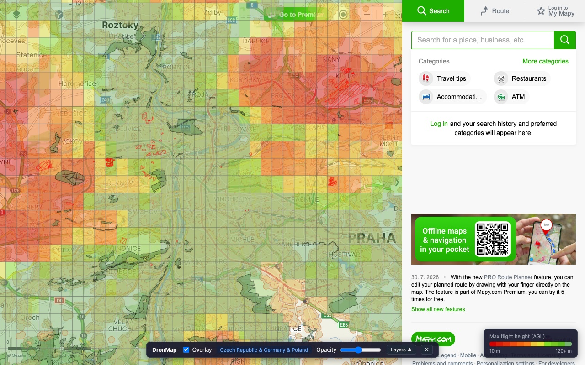
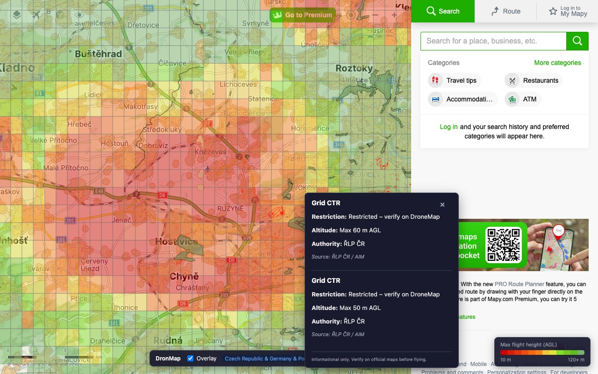
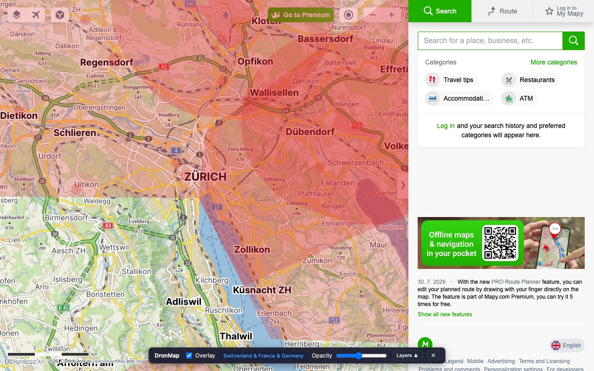
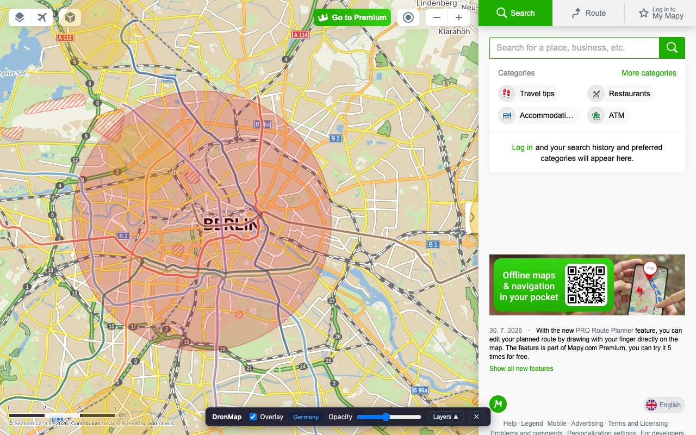
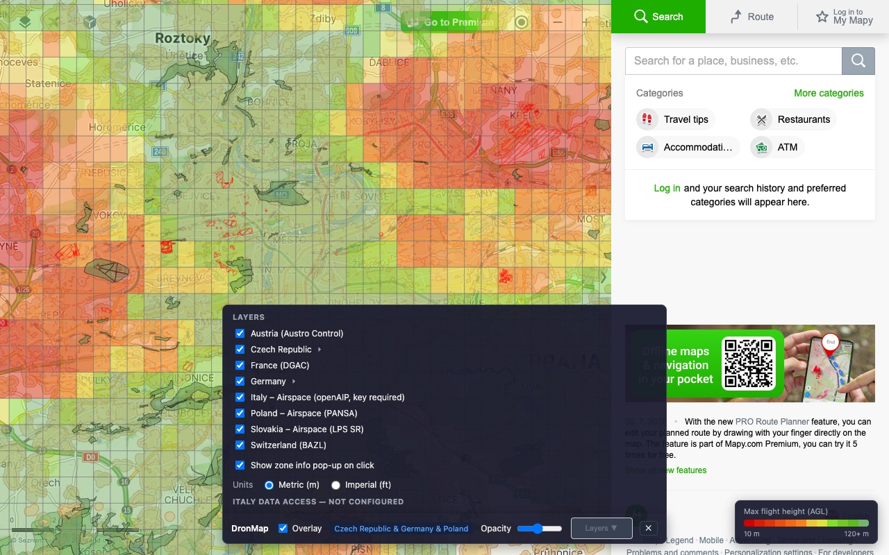

Drone restriction zones, right on the map you already use
DroneMapy overlays official drone restriction zones for eight European countries directly on mapy.com — so you can check where you can fly while planning your route, no switching to a national drone map.

Independent project — not affiliated with Mapy.com (Seznam.cz) or any aviation authority.
Features
Built to stay out of your way while you plan a flight.
Crisp vector overlays
Zones are drawn as vectors on canvas, tiled to your viewport — no blurry raster or WMS layers.
Click for details
Click any point on the map to see the restriction, altitude limit, authority and contact for that zone.
Per-country control
Toggle layers per country, adjust overlay opacity, switch between metric and imperial units.
Straight from the source
Data is fetched live from official aviation-authority servers — no middleman server in between.
No account, no tracking
Nothing to sign up for. No analytics, no data collection — see the Privacy Policy.
Offline mode (Switzerland)
Download the full Swiss dataset (~13 MB) once for instant offline zone lookups on repeat visits.
Coverage
Eight countries, loaded live for whichever part of the map you're looking at.
| Country | Authority / source | Data |
|---|---|---|
| 🇨🇭 Switzerland | BAZL — geo.admin.ch | Full geo zones + offline mode |
| 🇨🇿 Czech Republic | ŘLP — aimgis.rlp.cz | Full geo zones |
| 🇫🇷 France | DGAC/IGN — data.geopf.fr | Full geo zones |
| 🇩🇪 Germany | DIPUL/DFS — uas-betrieb.de | Full geo zones |
| 🇦🇹 Austria | Austro Control — dronespace.at | Full geo zones |
| 🇵🇱 Poland | PANSA — airspace.pansa.pl | Classic airspace only |
| 🇸🇰 Slovakia | LPS SR — gis.lps.sk | Classic airspace only |
| 🇮🇹 Italy | openAIP | Classic airspace — needs your free API key |
Screenshots
See it running across a few cities.




Install
Get it from the Chrome Web Store — one click, no build step:
Prefer building from source instead?
git clone https://github.com/petrcezner/dronemapy.git
cd dronemapy
npm install
npm run buildchrome://extensions and enable Developer modeextension/dist folderThis extension is an informational aid only. Always verify restrictions against official sources and current NOTAMs before flying.